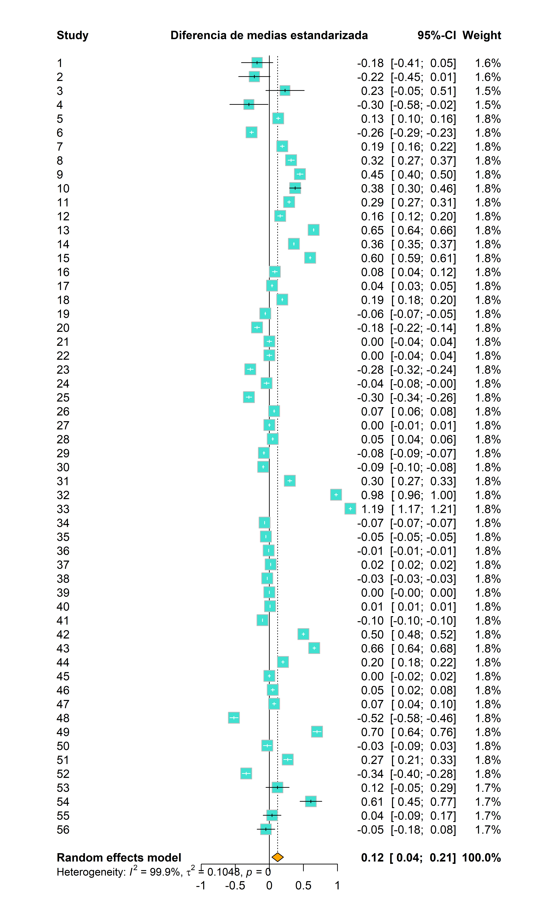

metaxxx(
studlab,
data,
sm,
common,
random,
method.tau,
backtransf,
subset,
exclude,
subgroup,
cluster
)Modelos de efectos fijos y aleatorios
© 2025 Instituto Nacional de Epidemiología “Dr. Juan H. Jara” (ANLIS) - CC BY-NC 4.0


Introducción
Uno de los objetivos principales del modelado estadístico es representar la realidad de la manera más “sencilla” posible, capturando su estructura esencial y descartando elementos cuya variabilidad podría generar ruido en la interpretación de los fenómenos.
Para ajustar un modelo estadístico, partimos de los datos disponibles y buscamos construir una representación basada en ellos. En el caso de los modelos de meta-análisis, los datos de interés son los estimadores de efecto obtenidos en cada estudio, y el objetivo principal es analizar la variabilidad entre ellos, la cual puede deberse a diferencias metodológicas, características de las poblaciones estudiadas u otras fuentes.
Existen dos enfoques principales en meta-análisis: los modelos de efectos fijos y los modelos de efectos aleatorios. Durante este curso, describiremos sus características fundamentales y su implementación en R. Para quienes deseen profundizar en los fundamentos matemáticos de estos modelos, recomendamos consultar el Capítulo 4 de Schwarzer, Carpenter, y Rücker (2015) y el Capítulo 2 de Harrer et al. (2021).
Modelos de efectos fijos
El modelo de efectos fijos parte de la premisa de que todos los estimadores de efecto incluidos en el meta-análisis corresponden a un mismo efecto verdadero común y que las diferencias observadas entre ellos se deben exclusivamente al error muestral. Bajo este enfoque, se asume que existe un único valor subyacente para el efecto de interés, por lo que el objetivo principal es estimarlo a partir de los datos disponibles.
El estimador de efecto global, denotado como \(\theta\), se calcula como un promedio ponderado de los estimadores individuales, asignando a cada estudio un peso proporcional a su precisión:
\[ \theta = \frac{\sum{y_i w_i}}{\sum{w_i}} \]
Donde:
\(y_i\) es el efecto estimado para cada estudio.
\(w_i\) es el peso asignado a cada estudio, calculado como el inverso de la varianza del estimador de efecto: \(w_i = 1/S^2_{y_i}\).
De este modo, los estudios con menor varianza tienen mayor influencia en la estimación final. Esta estrategia de ponderación se conoce como el método de la varianza inversa.
Dado que estos modelos suponen homogeneidad entre los estudios, no contemplan la existencia de fuentes adicionales de variabilidad más allá del error aleatorio. Por esta razón, también se les conoce como modelos de efecto común (common effect model) o modelos de efectos equivalentes (equal effect model).
Sin embargo, en la práctica, es común encontrar heterogeneidad entre los estudios, lo que puede hacer que el modelo de efectos fijos sea inadecuado. Cuando existe variabilidad real entre los estudios, un modelo de efectos aleatorios suele ser una opción más apropiada, ya que permite incorporar esta variabilidad en la estimación del efecto global.
Modelos de efectos aleatorios
Los modelos de efectos aleatorios suponen que, además del error aleatorio, existen otras fuentes de variabilidad entre los estudios. En este caso, no se asume que todos los estudios comparten un único efecto verdadero común, sino que cada uno estima un efecto específico que varía dentro de una distribución de efectos verdaderos.
Bajo este enfoque, los efectos verdaderos no son idénticos entre estudios, sino que siguen una distribución alrededor de una media global. Esto introduce una componente adicional de variabilidad, conocida como heterogeneidad entre estudios, que refleja diferencias sistemáticas más allá del error muestral.
El objetivo de estos modelos es estimar la media de la distribución de efectos verdaderos, considerando tanto la variabilidad dentro de cada estudio como la variabilidad entre estudios. Para ello, el peso asignado a cada estudio en la estimación global se ajusta de la siguiente manera:
\[w^*_i = \frac{1}{S^2_{y_i} + \tau^2}\]
donde:
\(S^2_{y_i}\) es la varianza intraestudio, que indica la precisión del estimador de efecto.
\(\tau^2\) (tau-cuadrado) es la varianza entre estudios, que mide la heterogeneidad en los efectos estimados.
Existen diversos métodos para estimar \(\tau^2\), siendo los más comunes la máxima verosimilitud restringida (REML) y el método de DerSimonian y Laird. Aunque el desarrollo matemático de estos métodos excede los alcances del curso, su correcta aplicación es fundamental para interpretar adecuadamente los resultados de un meta-análisis con efectos aleatorios.
Medidas de heterogeneidad
En un meta-análisis, la variabilidad en los resultados puede deberse a múltiples fuentes:
Variabilidad intraestudio, que refleja las diferencias entre los participantes dentro de cada estudio.
Heterogeneidad entre estudios, es decir, la variabilidad en los efectos estimados más allá de lo esperable por azar.
Error de muestreo y otras fuentes de incertidumbre, que pueden influir en las diferencias observadas.
La heterogeneidad entre estudios es particularmente importante, ya que indica si los efectos varían más de lo que se esperaría solo por error aleatorio. En la siguiente tabla, adaptada de Schwarzer, Carpenter, y Rücker (2015), se resumen los indicadores más utilizados para cuantificar la heterogeneidad:
Estos indicadores permiten evaluar si las diferencias observadas entre los estudios justifican el uso de un modelo de efectos aleatorios en lugar de uno de efectos fijos.
Implementación en R
Para ajustar modelos de meta-análisis en R, los dos paquetes más utilizados son metafor (Viechtbauer 2010) y meta (Balduzzi, Rücker, y Schwarzer 2019).
metafor: Es un paquete flexible y potente que permite modelar escenarios complejos con alta precisión. Sin embargo, su uso requiere una curva de aprendizaje más pronunciada y un conocimiento avanzado en modelado estadístico.meta: Es más accesible y fácil de usar, lo que lo convierte en una excelente opción para quienes sólo poseen conocimientos básicos de estadística inferencial y manejo de R. Este paquete es ideal para aplicaciones prácticas y proporciona una interfaz más simple y directa para realizar análisis estándar.
Dado que este curso se enfoca en la aplicación práctica del meta-análisis, utilizaremos principalmente el paquete meta. Este paquete ajusta de manera predeterminada tanto modelos de efectos fijos como de efectos aleatorios e incluye distintos estimadores de heterogeneidad estadística.
Estructura básica
El paquete meta ofrece una serie de funciones para ajustar modelos de meta-análisis con una estructura uniforme. La función principal sigue el formato metaxxx(), donde xxx indica el estimador de efecto a calcular. Sus argumentos clave incluyen:
donde:
studlab: Identificador único de cada estudio en el conjunto de datos.data: Conjunto de datos con los resultados de los estudios incluidos en el meta-análisis.sm: Estimador de efecto global a calcular (ej.: “OR” para odds ratio, “RR” para riesgo relativo, “MD” para diferencia de medias, etc.).common: Indica si se ajusta un modelo de efectos fijos (TRUE, por defecto) o se omite (FALSE).random: Indica si se ajusta un modelo de efectos aleatorios (TRUE, por defecto) o se omite (FALSE).method.tau: Método para estimar la varianza entre estudios (REML, por defecto).backtransf: Define si los resultados se muestran en la escala original de los datos (TRUE) o transformada (FALSE, por ejemplo log-OR).subset: Permite seleccionar un subconjunto de estudios para el análisis (opcional).exclude: Permite excluir estudios específicos (opcional).subgroup: Permite realizar un análisis por subgrupos (opcional).cluster: Permite ajustar modelos multinivel si los datos están agrupados en clústeres (opcional).
Ejemplo práctico
En este ejemplo, utilizaremos la función metagen(), diseñada para trabajar con estimadores de efecto previamente calculados. Usaremos el conjunto de datos dat.konstantopoulos2011, que contiene información de un meta-análisis de 56 estudios sobre el impacto de la modificación del calendario escolar en el rendimiento académico. Este conjunto de datos forma parte de la dependencia metadat (Viechtbauer et al. 2025), que se carga automáticamente al activar el paquete meta.
# Cargar el paquete meta
library(meta)
# Cargar datos
datos <- dat.konstantopoulos2011
# Explorar variables disponibles
names(datos)[1] "district" "school" "study" "year" "yi" "vi" Las variables de entrada para metagen() serán yi (diferencia de medias estandarizada) y vi (varianza de la estimación). Ajustamos los modelos de efectos fijos y aleatorios:
# Ajustar el modelo de efectos fijos y aleatorios
mod <- metagen(TE = yi,
seTE = vi,
studlab = study,
common = TRUE,
random = TRUE,
backtransf = TRUE,
data = datos)
# Mostrar salida del modelo
modNumber of studies: k = 56
95%-CI z p-value
Common effect model -0.0133 [-0.0140; -0.0126] -38.82 0
Random effects model 0.1219 [ 0.0365; 0.2074] 2.80 0.0052
Quantifying heterogeneity (with 95%-CIs):
tau^2 = 0.1048 [0.0739; 0.1588]; tau = 0.3238 [0.2719; 0.3985]
I^2 = 99.9%; H = 41.32
Test of heterogeneity:
Q d.f. p-value
93892.81 55 0
Details of meta-analysis methods:
- Inverse variance method
- Restricted maximum-likelihood estimator for tau^2
- Q-Profile method for confidence interval of tau^2 and tau
- Calculation of I^2 based on QDado que la heterogeneidad estadística es alta \((I^2 = 99,9\%)\), podemos omitir el modelo de efectos fijos cambiando a FALSE el argumento common:
# Ajustar solo el modelo de efectos aleatorios
mod <- metagen(TE = yi,
seTE = vi,
studlab = study,
common = FALSE,
random = TRUE,
backtransf = TRUE,
data = datos)
# Mostrar salida del modelo
modNumber of studies: k = 56
95%-CI z p-value
Random effects model 0.1219 [0.0365; 0.2074] 2.80 0.0052
Quantifying heterogeneity (with 95%-CIs):
tau^2 = 0.1048 [0.0739; 0.1588]; tau = 0.3238 [0.2719; 0.3985]
I^2 = 99.9%; H = 41.32
Test of heterogeneity:
Q d.f. p-value
93892.81 55 0
Details of meta-analysis methods:
- Inverse variance method
- Restricted maximum-likelihood estimator for tau^2
- Q-Profile method for confidence interval of tau^2 and tau
- Calculation of I^2 based on QPara explorar los resultados con más detalle, podemos utilizar summary(mod) que incluye las métricas para cada estudio individual:
Estimador de efecto: Diferencia de medias estandarizada por estudio.
95%-CI: Intervalo de confianza al 95% de la diferencia de medias estandarizada.%W (random): Peso de cada estudio en el modelo de efectos aleatorios, determinado por el tamaño muestral y la varianza.
A continuación se muestran los resultados generales del meta-análisis:
k: número total de estudios incluidos en el análisis.Common effects model: Diferencia de medias observada para cada estudio en el modelo de efectos fijos.Random effects model: Diferencia de medias observada para cada estudio en el modelo de efectos aleatorios.El estadístico
zy su p-valor (p-value) para evaluar la significancia del efecto global.
Luego se presentan las métricas de heterogeneidad:
tau^2ytau: cuantifican la variabilidad entre estudios más allá del error muestral.I^2: porcentaje de variabilidad atribuida a diferencias reales entre estudios.HyQ: indicadores de heterogeneidad en el conjunto de estudios.
La salida del modelo también detalla los métodos estadísticos utilizados, incluyendo:
Método de varianza inversa para ponderar los estudios.
Estimador de máxima verosimilitud restringida para
tau^2.Metodología aplicada para calcular
I^2.
En base a la salida anterior, podemos concluir que el meta-análisis realizado sobre 56 estudios individuales muestra que el rendimiento académico aumenta significativamente con la modificación del calendario escolar \((p < 0.005)\). La alta heterogeneidad estadística \((I^2 = 99,9\%)\) sugiere que la variabilidad observada se debe a diferencias reales entre estudios.
Forest plots
Los resultados del meta-análisis pueden visualizarse mediante forest plots, gráficos que representan la distribución de los estimadores de efecto de los estudios individuales y sus intervalos de confianza en relación con el estimador global. Además, proporcionan información sobre la heterogeneidad entre estudios, facilitando la interpretación de los resultados.
El paquete meta incluye la función forest(), que permite generar forest plots de forma rápida y con múltiples opciones de personalización. Para conocer todos los argumentos disponibles, se puede ejecutar ?forest en la consola de R.
Algunos de los principales argumentos de forest() incluyen:
forest(
mod, # Nombre del modelo de meta-análisis
sortvar, # Ordena los estudios según una variable numérica
smlab, # Etiqueta del estimador de efecto
col.diamond, # Color del estimador global
col.square, # Color de los estimadores individuales
print.tau2 = TRUE, # Tau-cuadrado (TRUE por defecto)
print.I2 = TRUE, # I-cuadrado (TRUE por defecto)
print.Q = TRUE, # Estadístico Q de Cochran (TRUE por defecto)
print.pval.Q = TRUE, # p-valor del estadístico Q (TRUE por defecto)
digits = 2, # Número de decimales a mostrar
...)A continuación, generamos un forest plot básico a partir del modelo de efectos aleatorios. Para una mejor visualización, vamos a personalizar los colores del gráfico con los argumentos col.diamond y col.square:
forest(mod,
smlab = "Diferencia de medias estandarizada",
col.diamond = "orange",
col.square = "turquoise")
El gráfico generado se organiza en tres paneles principales:
Panel izquierdo:
Identificador de estudio (
"studlab")Columnas adicionales dependientes del estimador de efecto utilizado.
Panel central:
Línea vertical de referencia que indica el valor de no efecto (0 en datos continuos, 1 en escalas logarítmicas).
Línea punteada que representa el estimador global del meta-análisis.
Rombo (🔶): Representa el estimador global, cuyo ancho indica el intervalo de confianza al 95%.
Cuadrados (🟦): Representan los estimadores de los estudios individuales, con un tamaño proporcional al peso del estudio en el análisis.
Bigotes horizontales: Indican los intervalos de confianza al 95% de cada estudio.
Panel derecho:
Estimador de efecto e intervalo de confianza al 95% de cada estudio.
Peso estadístico asignado a cada estudio en el modelo de efectos aleatorios.
Se puede controlar la información que aparece en los lados del forest plot mediante los argumentos leftcols, rightcols, leftlabs y rightlabs. También es posible aplicar formatos predefinidos con layout = "RevMan5" o layout = "JAMA", que ajustan el diseño según estilos ampliamente utilizados en la literatura científica.
Los gráficos generados con forest() no son compatibles conggplot2 ni se autoescalan, lo que puede ser problemático si el número de estudios es grande, ya que el gráfico podría quedar ilegible en la vista predeterminada.
Para evitar este problema, se recomienda exportar el gráfico a un archivo de imagen (por ejemplo, PDF o PNG) usando las funciones pdf() o png(), especificando un tamaño adecuado antes de ejecutarlo con forest().
# Defino parámetros para guardar la imagen
png(
filename = "forest.png", # Nombre de archivo para guardar el gráfico
width = 8, # Ancho del gráfico (ajustar según sea necesario)
height = 13, # Alto del gráfico (ajustar según sea necesario)
units = "in", # Unidad para definir el tamaño
res = 300, # Resolución de imagen
)
# Genero el gráfico (no se visualiza en el panel de Plots)
forest(
mod,
smlab = "Diferencia de medias estandarizada",
col.diamond = "orange",
col.square = "turquoise",
leftcols = "studlab"
)
# Guardo el gráfico
dev.off()En la siguiente parte de esta unidad, exploraremos las funciones de meta que permiten ajustar modelos de meta-análisis para distintos estimadores de efecto en epidemiología. Además, abordaremos métodos para controlar la heterogeneidad, tales como el análisis de moderadores y la meta-regresión y aprenderemos qué es y como se mide el sesgo de publicación.
Referencias
Balduzzi, Sara, Gerta Rücker, y Guido Schwarzer. 2019. «How to perform a meta-analysis with R: a practical tutorial».
Harrer, Mathias, Pim Cuijpers, Toshi A Furukawa, y David D Ebert. 2021. Doing Meta-Analysis With R: A Hands-On Guide. Boca Raton, FL; London: Chapman & Hall/CRC Press. https://www.routledge.com/Doing-Meta-Analysis-with-R-A-Hands-On-Guide/Harrer-Cuijpers-Furukawa-Ebert/p/book/9780367610074.
Schwarzer, Guido, James R. Carpenter, y Gerta Rücker. 2015. Meta-Analysis with R. Editado por R Gentleman, K Hornik, y G Parmigiani. Springer. https://doi.org/10.1007/978-3-319-21416-0_5.
Viechtbauer, Wolfgang. 2010. «Conducting meta-analyses in R with the metafor package» 36. https://doi.org/10.18637/jss.v036.i03.
Viechtbauer, Wolfgang, Thomas White, Daniel Noble, Alistair Senior, y W. Kyle Hamilton. 2025. «metadat: Meta-Analysis Datasets». https://CRAN.R-project.org/package=metadat.